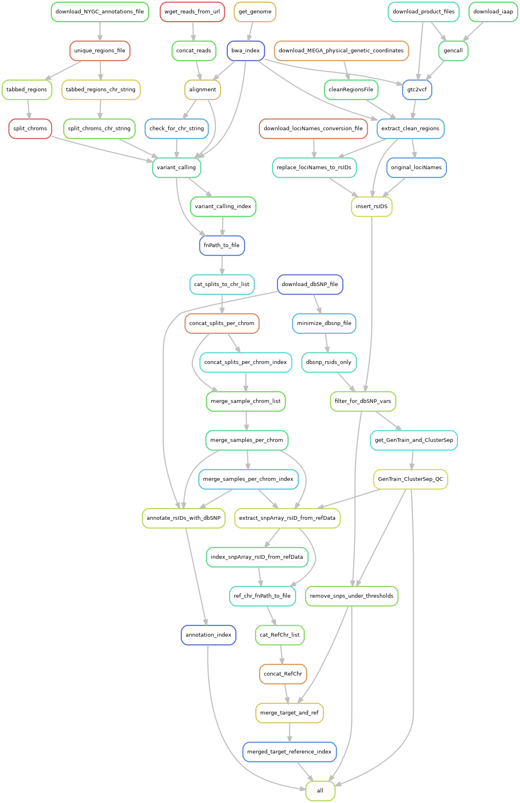

Merge Reference and Target Data
TL;DR setup
Please make sure that your conda environment for Iliad is activated - conda activate iliadEnv or mamba activate iliadEnv
Modify the configuration file workdirPath parameter to the appropriate path leading up to and including /Iliad and a final forward slash e.g. /Path/To/Iliad/.
The configuration file is found in config/config.yaml.
#####################################
#####################################
#####################################
# # # USER INPUT VARIABLES # # #
#####################################
#####################################
#####################################
# You must insert your /PATH/TO/Iliad/
# use 'pwd' command to find your current working directory when you are inside of Iliad directory
# e.g. /path/to/Iliad/ <---- must include forward slash at the end of working directory path
# must include forward slash, '/', at the end of working directory path
workdirPath: /Insert/path/to/Iliad/
If you are running this submodule, you must first run one of the two sequence modules (Reference Data) and the SNP Array module (Target Data)
There are no required configurations in your
/Iliad/config/config.yamlfile for this submodule.You will not need to place your data into the
/Iliad/data/target_ref_merge/directory. Iliad detects the completed files from the main modules. Merged data will be output into this directory.
Since this module is NOT the main snakefile, Snakemake will NOT automatically detect it without the --snakefile flag.
(Please make sure that your conda environment for Iliad is activated - conda activate iliadEnv or mamba activate iliadEnv)
$ snakemake --snakefile workflow/targetRefMerge_Snakefile --cores 1
and combined with other user-specified snakemake flags such as --cores.
If you plan to use on a local machine or self-built server without a job scheduler the default command to run is the following:
$ snakemake -p --use-singularity --use-conda --snakefile workflow/targetRefMerge_Snakefile --cores 1 --jobs 1 --default-resource=mem_mb=10000 --latency-wait 120
However, there is a file included in the Iliad directory named - targetRefMerge-snakemake.sh that will be useful in batch job submission.
Below is an example snakemake workflow submission in SLURM job scheduler.
Please read the shell variables at the top of the script and customize to your own paths and resource needs.
$ sbatch targetRefMerge-snakemake.sh
If you would like more in-depth information and descriptions, please continue to the next sections below. Otherwise, you have completed the TL;DR setup section.
Information
This tutorial introduces the Reference and Target data Bcftools merge submodule of the Iliad workflow developed using Snakemake workflow language.
Please visit Snakemake for specific details. They also provide informational slides. In general, though, each module is composed of rules. These rules define how output files are generated from input files while
automatically determining dependencies amongst the rules. A DAG (directed acyclic graph) of jobs will be built each time to account for all of the samples and jobs
that will executed either via job scheduler or local cores and will execute in parallel if multiple jobs are declared.
Because of the Snakemake workflow system design, the Iliad workflow is scalable from single core machines to HPC clusters with job schedulers.
- The Merge Reference and Target Data submodule is designed to simplify merging the final product VCFs from the one of the two sequence modules
Raw Seq or Stored Seq - and the SNP Array Module.
Since this submodule requires completion from two of the three main modules, it is understood that Singularity would have been installed properly and called on by those modules. Thus, Snakemake will call on the Iliad Singularity container for this submodule, too, rather than creating a rule-based conda environment. We ensured no bioinformatics knowledge is needed to run this module with the help of internal test runs on MacOS, Windows, and HPC as well as external test runs performed on Google Cloud Platform (GCP).
Merge Reference and Target Data Submodule Rulegraph
Background
Genome-wide microarray Target data, in combination with genotyping-by-sequencing Reference data, provides the means necessary for analyses that require GWAS data. GWAS data analyses include applications beyond that of gene identification and imputation, such as ancestry estimation, historical population reconstruction, clinical genetic testing for diagnostic purposes, forensic analyses, and new method validation for sequencing data.
If you are conducting imputation, we encourage you review the protocol for the imputation tools you will employ. You may not need to merge your completed target and reference data.
Pull requests and collobarations are welcomed.
Basics
This is a minor submodule in terms of being lightweight and does not require many of the components that some of the other modules do. This module does require Singularity, on the basis that the user already has this installed for completing main modules.
If you completed the main modules for target and reference data and have those final VCF files that need combined, this module is for you.
As long as you have completed 1) the raw or stored seq modules and 2) the snp array module then Iliad - Merge reference and target submodule will automatically merge those files as long as they exist.
Default workflow configurations can be found in your path to the configuration file: config/config.yaml - although there are no changes necessary for this submodule.
In-depth Setup
Please make sure that your conda environment for Iliad is activated - conda activate IliadEnv or mamba activate IliadEnv
You will find your new working directory within the path/to/project-workdir/Iliad/ folder.
Make sure your current working directory is in this cloned repo as stated in the installation.
ALSO, be sure your workdirPath: /path/to/project-workdir/Iliad/ in the config/config.yaml is set accordingly and with a forward slash / at the end.
$ cd Iliad
In that working directory you will find there are a number of directories with files and code to run each of the module pipelines.
FIRST, there is a /Iliad/data/target_ref_merge/ directory with a readme.md file. You will not have to place any data here, however,
data will be output in this directory.
SECOND, there is a configuration file with some default parameters, however, you MUST at least change the workdirPath parameter to the appropriate
path leading up to and including /Iliad/ e.g. /path/to/project-workdir/Iliad/. The configuration file is found in config/config.yaml.
workdirPath: /my/example/directory/Iliad/
Some other parameters exist for other modules, but none need editing for this submodule.
THIRD,
each module pipeline has a specific Snakefile.
Snakemake will automatically detect the main snakefile, which is named excatly as such and found in the workflow directory: workflow/Snakefile.
Iliad reserves the main snakefile for the main module, specifically the raw sequence read data module.
This means the user must specify which Snakefile will be invoked with
$ snakemake --snakefile workflow/targetRefMerge_Snakefile
and combined with other user-specified snakemake flags, of course, like --cores.
Users must invoke this snakefile e.g. workflow/targetRefMerge_Snakefile to perform the desired VCF data merge for this MERGE REFERENCE AND TARGET SUBMODULE.
If you plan to use on a local machine or self-built server without a job scheduler the default command to run is the following:
$ snakemake -p --use-conda --use-singularity --cores 1 --jobs 1 --snakefile workflow/targetRefMerge_Snakefile --default-resource=mem_mb=10000 --latency-wait 120
However, there is a file included in the Iliad directory named - targetRefMerge-snakemake.sh that will be useful in batch job submission.
Below is an example snakemake workflow submission in SLURM job scheduler.
Please read the shell variables at the top of the script and customize to your own paths and resource needs.
$ sbatch targetRefMerge-snakemake.sh